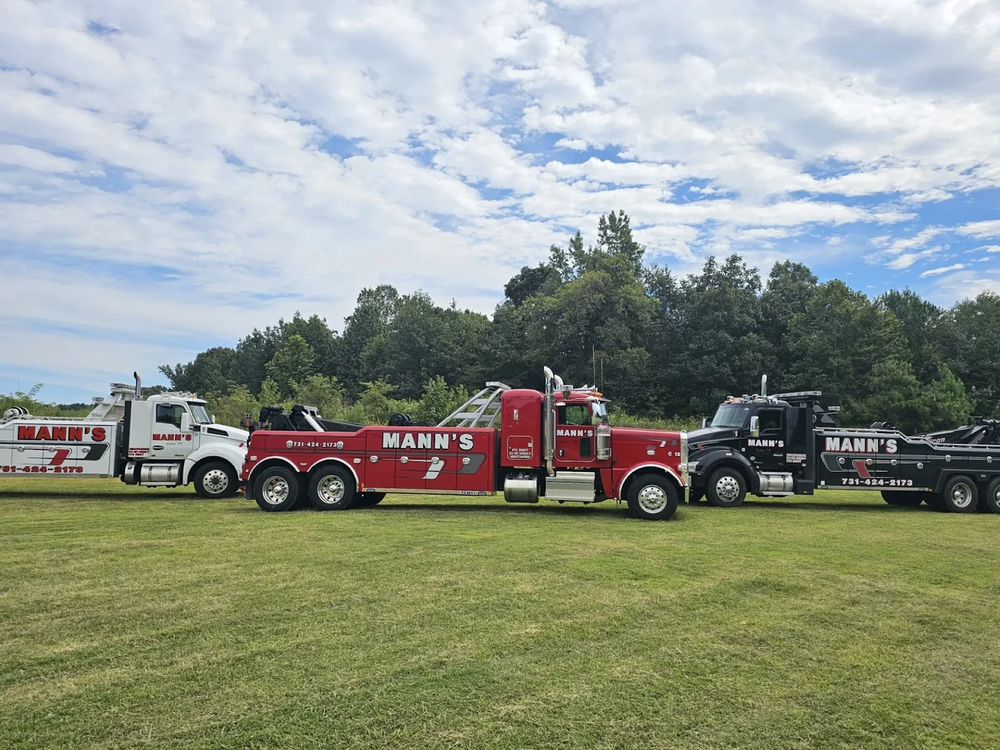
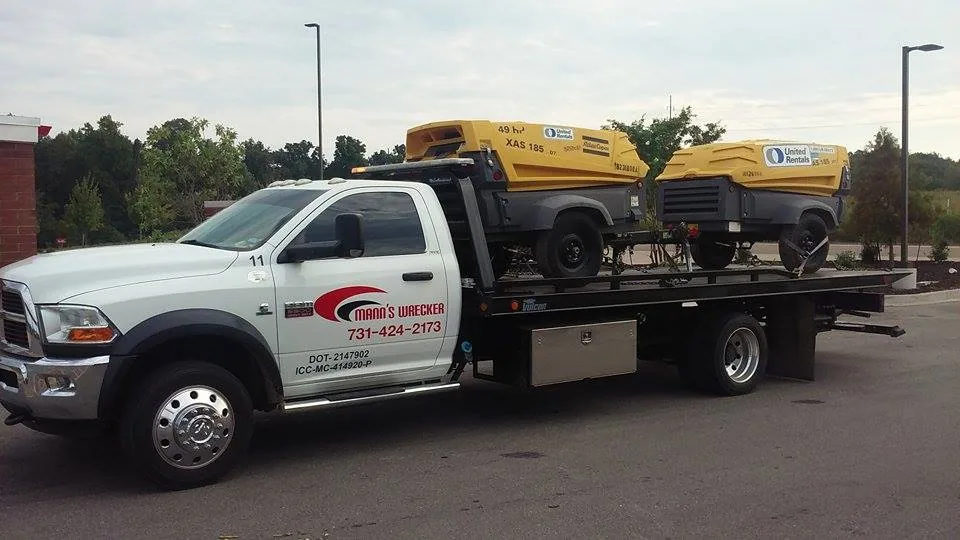

Broke down, wrecked or stuck? Call first.
Tap to call Mann’s(731) 424-2173Open 24 hoursCan’t talk where you are? Send your location and what happened and they call you back.
Anyone hurt? Call 911 first.
About Mann’s
A towing and heavy-duty wrecker company on Highway 70 East in Jackson, Tennessee.
“Keep you moving”
“Dedicated towing professionals experienced in both simple and complicated services. We work quickly, efficiently, effectively, and professionally.”
That’s how Mann’s describes itself. Auto hauling and heavy-duty towing for Madison County, with the same red-and-black lettering on every truck and the same phone number painted on the doors.

The drivers people remember
Customers name the drivers in their reviews again and again: Andy, David, Michael, Barry.
“Andy with Mann’s rescued me after I waited 3 hours on I-40 for another tow service. Incredibly polite, great service and quick on the scene. I hope I don’t need them again but if I ever need a tow service in Jackson, TN, Mann’s is my first call.”
In their words
“Mann’s Wrecker Company did an outstanding job recovering my GMC Sierra 2500HD pick up truck after I got it stuck in about a foot deep in mud. The truck was in a tough position, but Mann’s driver handled it with real skill and confidence. …”
“Barry did an excellent job for us when our car broke down on I-40 mile marker 139 east bound. Highly recommend this company. Thank you!”
“Stranded on the highway and they were absolutely fantastic! Would recommend to anyone. I called them directly on a Sunday and someone that works there actually picked up the phone and answered professionally. No “press 1 for” stuff. Driver was also very nice and extremely helpful.”
Then and now
An earlier Mann’s rollback, from their own site, with the same phone number that is on the trucks today.
